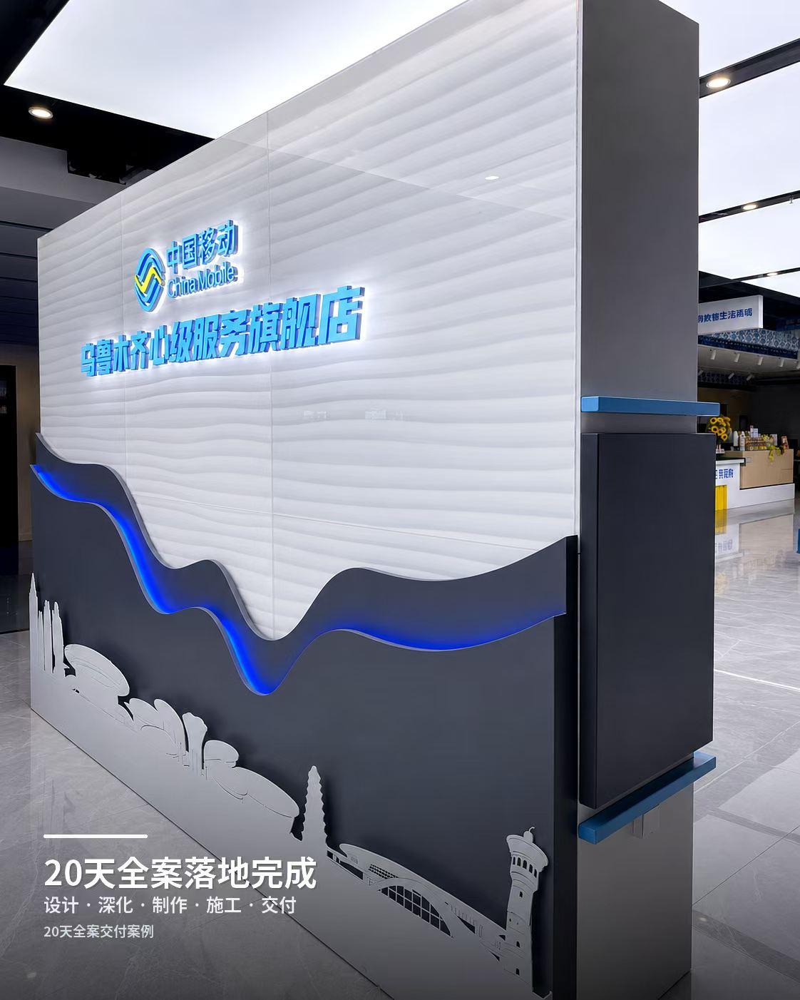
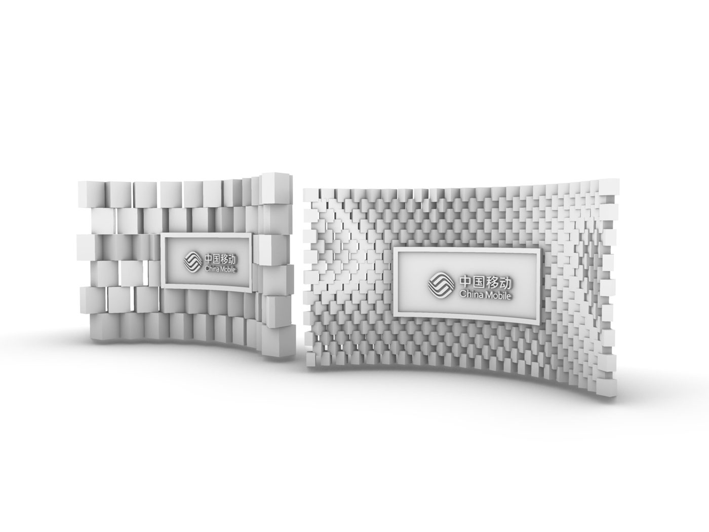
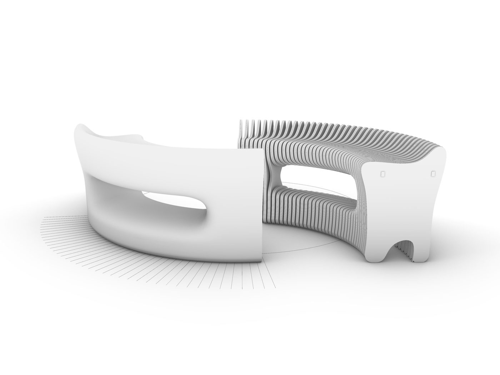
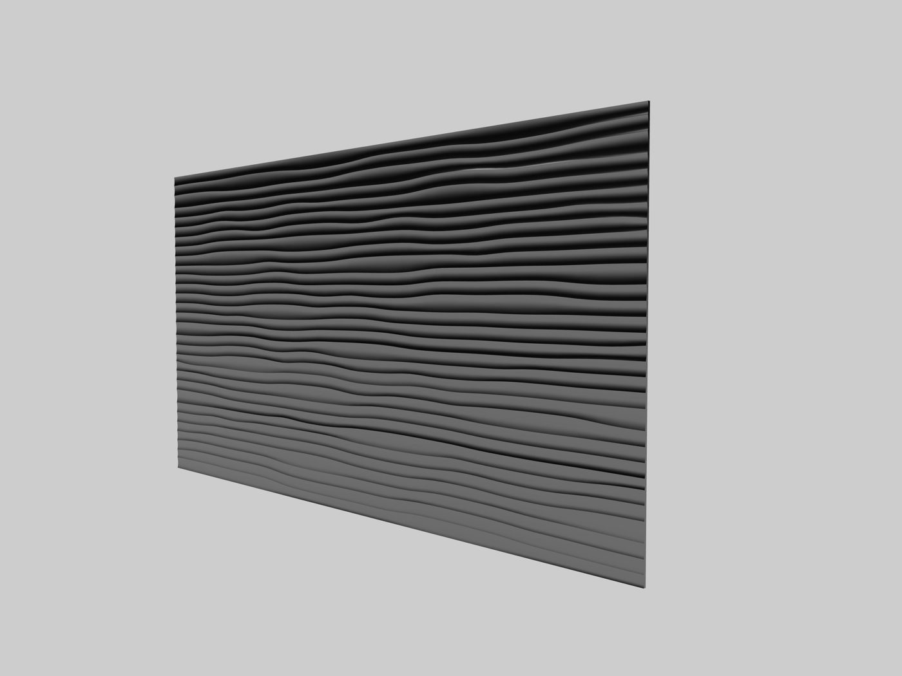
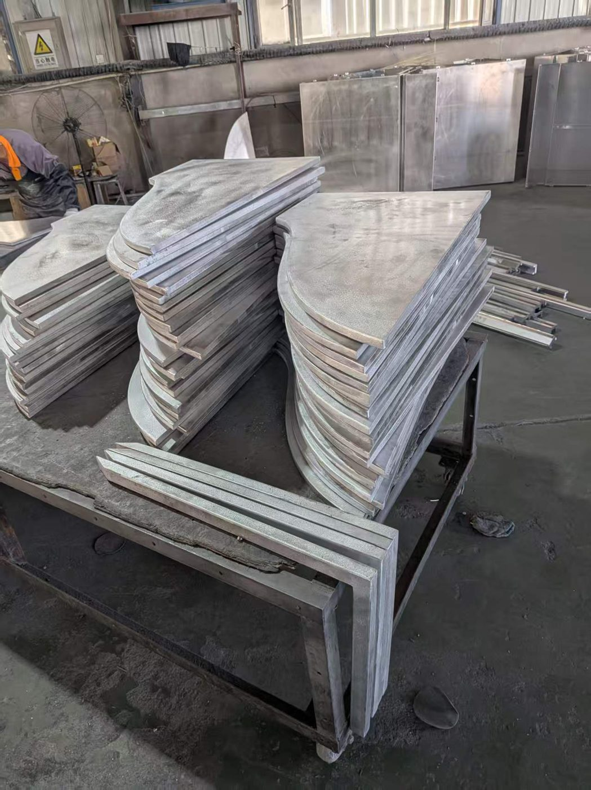
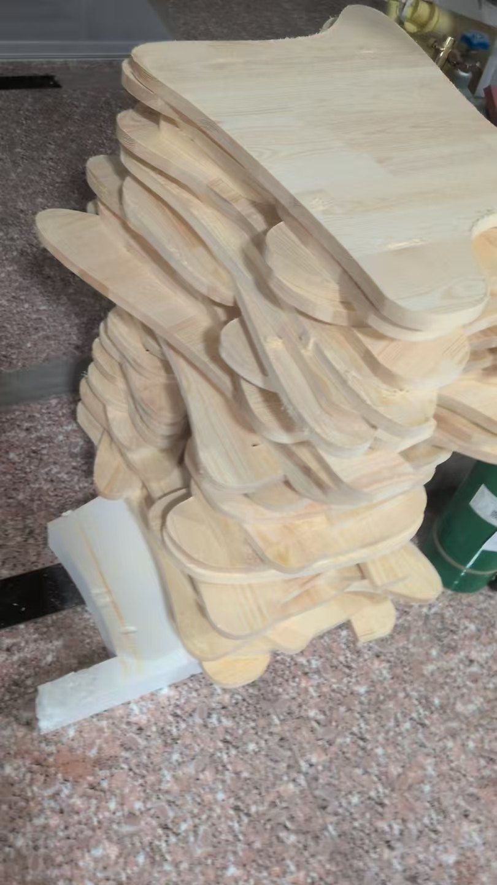
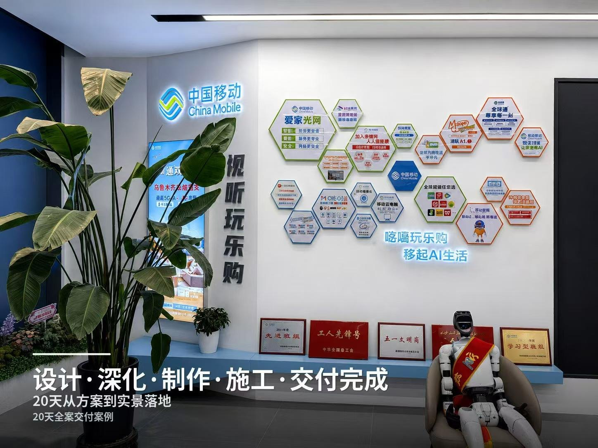

20天全案落地20-Day Full Delivery
中国移动旗舰店全案——设计、深化、制作、施工、交付，20 天完成。从 Rhino 建模到展平套料、加工与现场落地的完整记录。A complete China Mobile flagship store — designed, refined, fabricated, installed and delivered in 20 days. A full record from Rhino modeling to nesting, fabrication and on-site completion.
设计目标Design Goal
在极紧的 20 天工期内，完成中国移动旗舰店的全案——品牌墙、服务台、整体空间，从设计到交付一气呵成。Deliver a complete China Mobile flagship store — brand wall, service desk and full space — within a tight 20-day window, from design to handover.

建模过程Modeling Process






过程Process
先在 Rhino 中把整个营业厅建出来，动线、灯光、品牌元素在下料前全部确认；曲面接待台展平套料成平面下料图直接进入加工。每块板在数字端确认好，现场返工几乎为零——这是 20 天交付的关键。The whole hall was modeled in Rhino first, so layout, lighting and brand elements were confirmed before cutting. The curved reception desk was unfolded and nested into flat cut sheets. Every panel was confirmed digitally, so on-site rework was almost zero — the key to a 20-day delivery.